01はじめての設定
作業前にプロジェクトをバックアップしてください。0.5.1 DEV の開発・確認環境は Unity 2022.3.22f1 / PC / Built-in、VRChat Avatars SDK 3.10.5、Modular Avatar 1.18.7、NDMF 1.14.8 です。SDK・MA・NDMF は別途導入が必要です。最低対応版の保証や Quest / モバイル / URP 対応を示すものではありません。
インポートして開く
操作前にダウンロードした .unitypackage 全体をインポートします。コンパイル完了後、
黒猫Dev > Halo Loomを開きます。Avatar と取り付け先を指定
「基本」で Hierarchy の Avatar ルートを Avatar 欄へドラッグします。有効な Humanoid では Head が初期の取り付け先になります。自動設定されない場合は、取り付け先の Transform を直接指定してください。
位置と大きさを調整
位置・回転・半径で調整します。「シーンビューで直接調整」も利用できます。まず小さめの半径から始め、頭や耳との重なりを確認しましょう。
見た目を選ぶ
「外観」で基本エフェクト、装飾、または両方を選択。色・数・サイズを調整します。自作素材を使う場合は、下の「自作素材と取り付け位置」を参照してください。
動きを選ぶ
「モーション」でカテゴリーとモーションを選び、ループ時間などを調整します。星空のみの場合は、星のまたたき・移動・軌跡を設定します。
作成してプレビュー
「Halo を作成」を押し、「モーションをプレビュー」で確認します。既存の Halo を編集するときは、変更を適用してからプレビューしてください。
保存して、実際の環境で確認
Unity のシーンを保存します。VRChat 用アバターは SDK の Build & Test でも確認してください。使用中の Halo が参照する Generated 資産は削除しないでください。
024 つのワークスペース
「どこに置くか」「どう見せるか」「どう動かすか」を分けて設定できます。
基本
Avatar、取り付け先、位置、回転、半径を設定。現在の Halo を表示するボタンは Hierarchy の対象を選択・強調し、Scene ビューのズームは変えません。

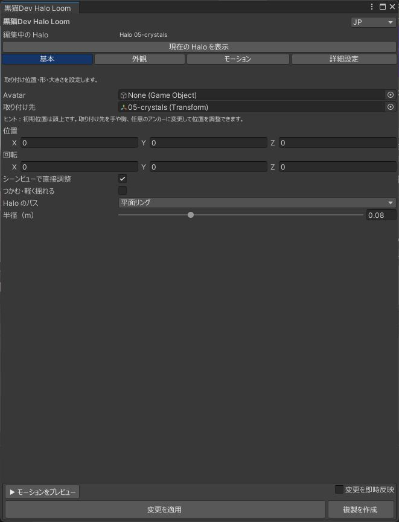
外観
基本エフェクト・装飾・混合を選び、色、素材、数、大きさ、透明感や軌跡を調整。使える項目は選択した見た目によって変わります。

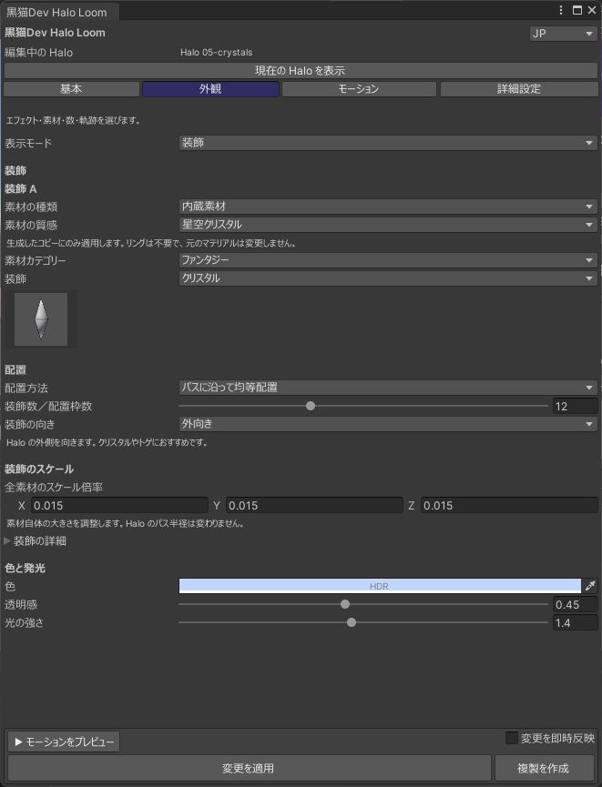
モーション
動きの種類と再生時間を設定。モーションの説明を読んで選べます。数の調整は「外観」で行います。

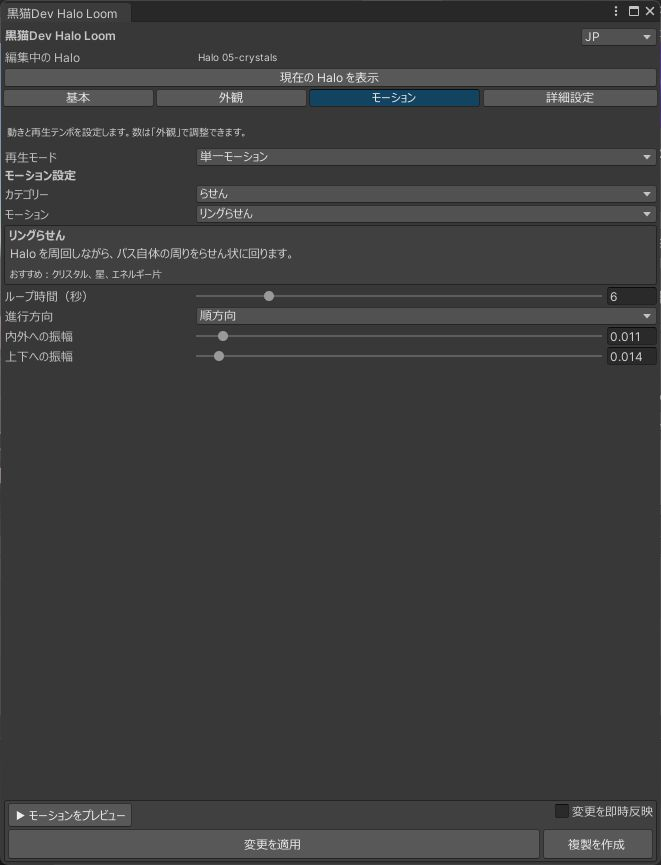
詳細設定
乱数シード、モーションの細部、演出時間、マテリアルやベイク品質など。最初は初期値のままで大丈夫です。

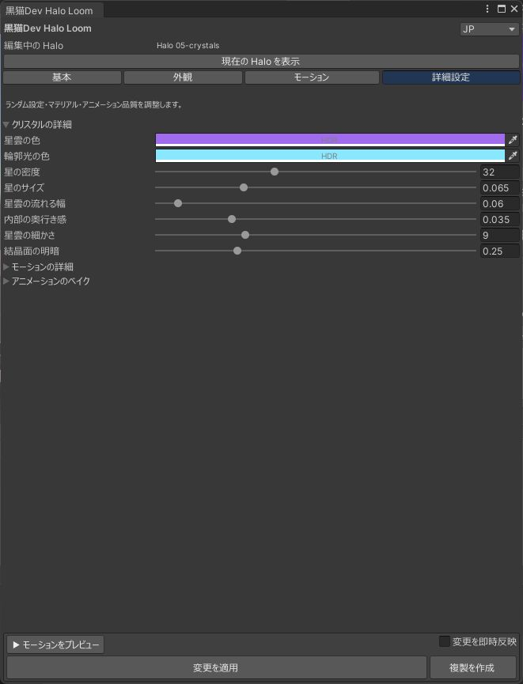
画像は旧 UI（2026-10-01）の操作例です。0.5.0 では表示や配置が異なる場合があります。Avatar は実際の対象を指定してください。
03自作素材と取り付け位置
製品版では、星やクリスタルだけでなく、自分で作った小物も素材にできます。きれいな装飾にも、ちょっと楽しい組み合わせにも。
- 「外観」の表示モードを装飾、または基本エフェクトと装飾の混合にします。
- 素材の種類をカスタム素材にして、Project ウィンドウの Prefab を指定します。Hierarchy 上のオブジェクトは直接使用できません。Prefab の代わりに Mesh と Material を指定することもできます。
- 装飾数、配置方法、大きさを調整します。半径は軌道の大きさ、装飾のスケールは素材自体の大きさです。
- 向きを「パスに沿う」「外向き」「中心向き」などから選びます。モデルの正面が合わない場合は素材の回転補正を調整します。
- 「モーション」で動きを選び、作成または変更を適用します。元の Prefab・Mesh・Material は変更せず、生成した側を使用します。
頭以外にも取り付けられます
「基本」の取り付け先を手首・胸・背中などの Transform、または自分で用意したアンカーへ変更します。その部位に合わせて位置・回転・半径を調整してください。各部位に自動フィットする機能ではありません。
素材自身のアニメーションを使うには？
任意の Generic AnimationClip を「素材自身のアニメーション」に指定できます。素材をルートにした曲線が対象で、Halo の周回とは別に動かせます。Humanoid Clip、Animation Events、合わないバインディングには対応しません。Prefab に既存の Animator Controller / Animation がある場合は追加 Clip を指定せず元の構成を保つか、Controller のない素材を用意してください。第三者 Animator の Editor プレビューは保証対象外です。
04見た目と動き
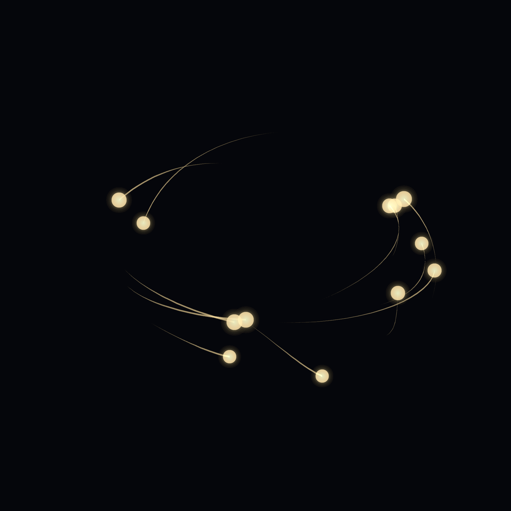
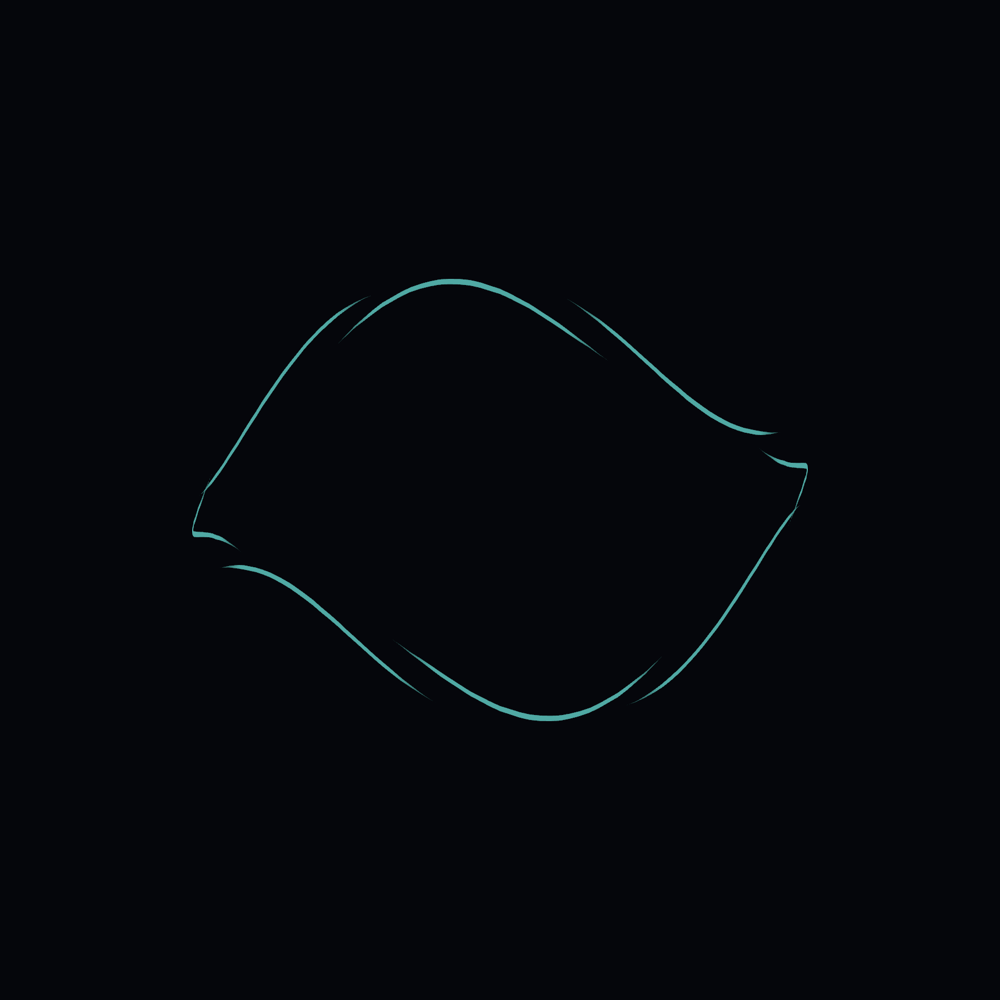
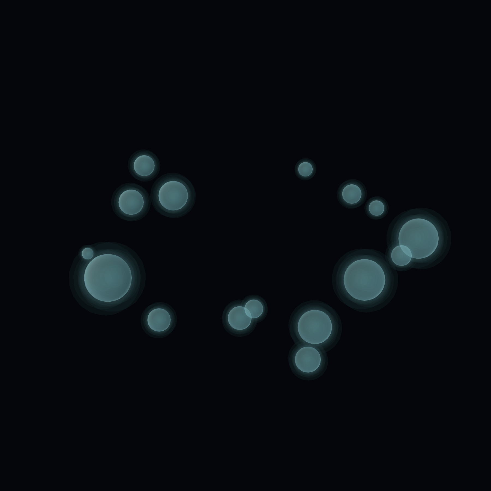
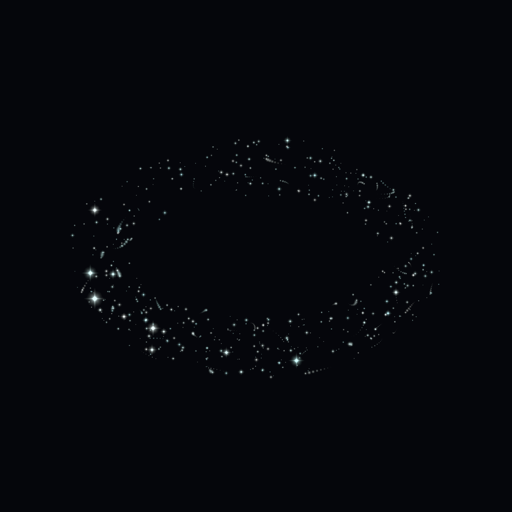
実際の Unity 表示による組み合わせ例です。各画像が独立した一括プリセットとして付属するわけではありません。エネルギーラインは線の太さ、バブルは透明感も調整できます。
0.5.1 DEV の光ときらめき

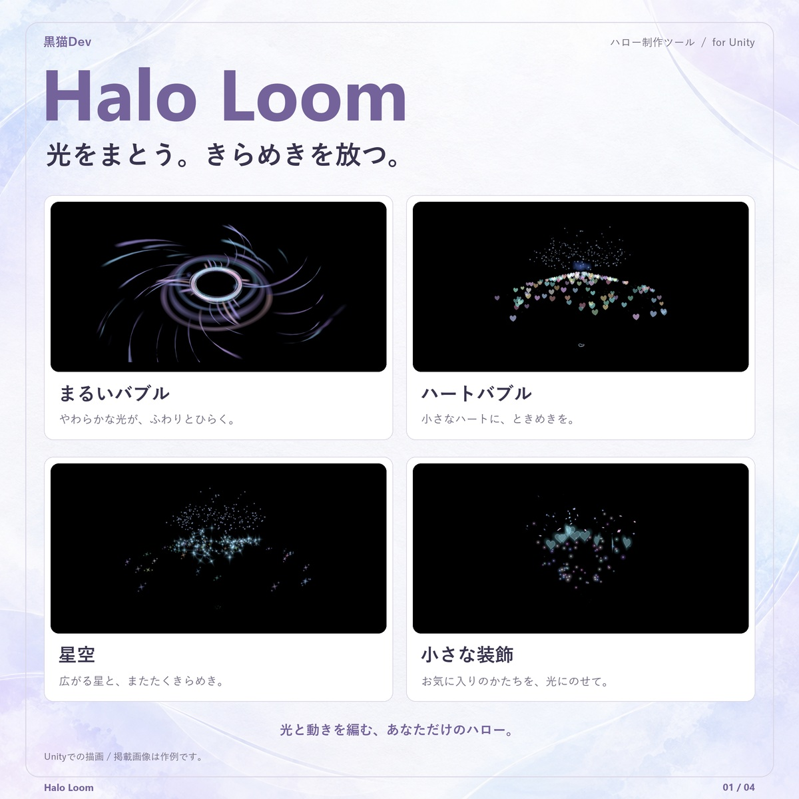

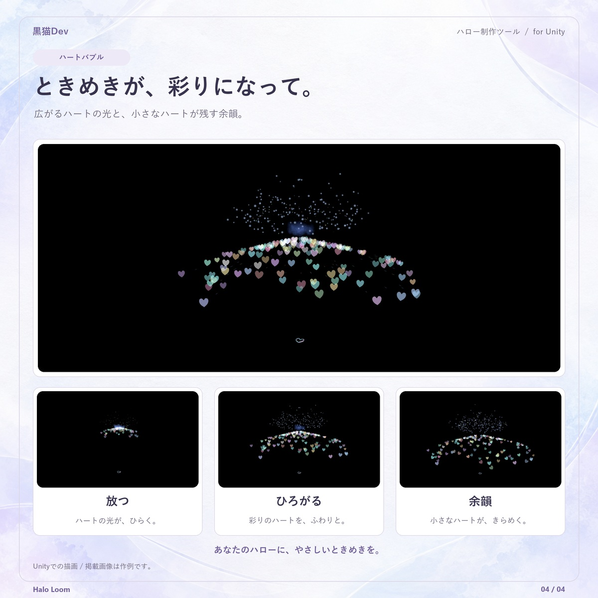
2026-10-18 の Unity Editor 実描画による作例です。画像内の説明は日本語です。画像をクリックして拡大できます。
装飾と光点に、20 種類の動き
穏やかな浮遊、螺旋、跳躍、編隊、演出のカテゴリーから選べます。まずは穏やかな動きでサイズを合わせ、その後に環面螺旋やホップ、収束演出を試すのがおすすめです。衝突系は見た目の演出で、物理的な衝突判定ではありません。大きい素材は重なることがあります。
星空は、またたきと小さな移動で
微小な四芒星が、中空の立体的なリングに分布します。外観で密度・星のサイズ・リングの厚みを、モーションでまたたき・短い閃光・移動・軌跡を調整します。星空そのものは独自の星アニメーションを使い、混合した装飾には通常のモーションを設定できます。
ランダム A / B / C
相性のよい候補を 3 種類以上選ぶと、異なる 3 つの動きを A → B → C の順に繋いで再生します。ループ時間は 3 段全体の長さです。組み合わせは保存され、毎周その場で抽選し直すものではありません。変更したいときは再抽選を使います。
05持つ・チャージ・発射・戻す
0.5.1 DEV — チャージから発射まで、もっと華やかに
- 装飾素材のチャージに、内側へ集まる光と、チャージ完了を知らせる穏やかな脈動を追加しました。
- 散射は扇状に、光束は細く集中し、連射は段階的に発射。それぞれの軌跡に合わせた彩色の噴流と、外へ広がる粒子が続きます。
- ハート型リングの拡散と余韻には、色とりどりのハートがきらめきます。
- 装飾は光だけでなく、選んだモデル本体も飛んで戻ります。内蔵 20 種類を対象に確認しています。
この更新は DEV 版です。掲載例は Unity Editor で描画しています。VRChat Client・ヘッドセット・複数人での表示・GPU 負荷は、この更新では再検証していません。実際に使用するアバターと環境で確認してください。

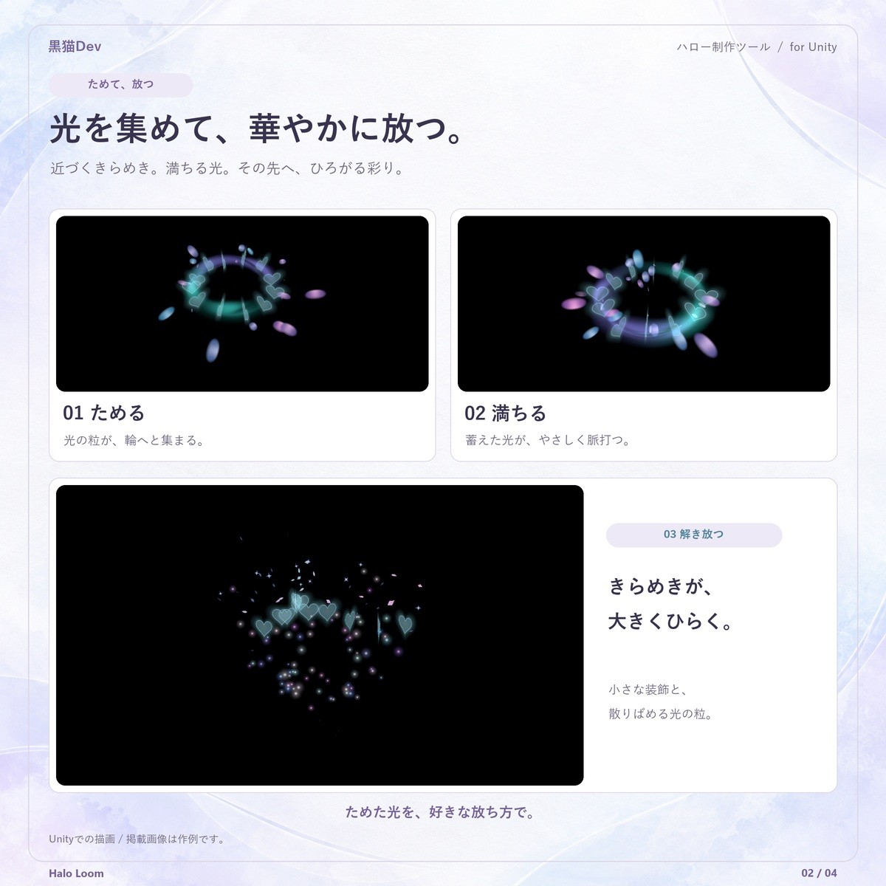

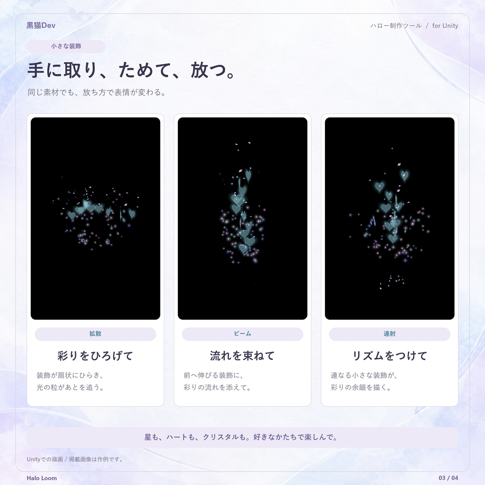
2026-10-18 の Unity Editor 実描画による作例です。画像内の説明は日本語です。画像をクリックして拡大できます。
- 光環へ先に触れ、その手で握ると持ちます。手を開いても同じ手に残ります。本人の接触と手のジェスチャーを使います。
- 持っている手で親指を立ててチャージ（初期値3秒、2～4秒）。途中で形を変えると中止。満充電の光と音の合図後は開いてもエネルギーを保持します。
- 頭の元位置から離れて握ると発射。方向は拳の指関節の前方、手首に追従します。設定で拡散／ビーム／連射を選択できます。演出後も持ち続けます。
- 戻すには同じ手を頭の元位置に戻し、開いてからもう一度握ります。満充電でも収納が優先され、メニューは不要。握ったまま近づけるだけでは戻りません。独自 home はその元位置を使います。
- 持ち替えは元の手を開き、もう一方で触れて握ります。チャージはやり直します。戻した後も開いてから握ると再び取れます。手のジェスチャーが固定されている場合は解除してください。
- PC：Halo Loom → PC → 展開 → チャージON → 満充電後に同じトグルOFFで発射。途中のOFFは中止。中止して戻す／リセットも利用できます。
06無料版と製品版
| 内容 | 無料版 | 製品版 |
|---|---|---|
| 基本エフェクト | 光点・中空の五芒星 | 光点・ライン・バブル・星空 |
| モーション | 穏やかな浮遊 / 波乗り周回 | 20 種類 + ランダム A/B/C |
| 軌道 | 円形 | 円形 / ハート / 花形 |
| 内蔵装飾・自作素材 | なし | 20 種類の装飾、Prefab / Mesh + Material |
| 取り付け位置・色・サイズ | 調整可能 | 調整可能 |
| ゲーム内インタラクション | 含まれません | 本人の持ち替え・チャージ・射出・頭上収納／PC 操作。SDK + MA + NDMF が必要 |
| 時間制限・透かし | なし | なし |
無料版は製品版なしで使用できます。同じプロジェクトで共存できますが、両版は互いの生成物を編集しません。価格・配布条件は BOOTH 商品ページをご確認ください。
07困ったときは
Shader が見つからない / ピンク色になる
パッケージに Editor と Shaders の両方が入っているか確認し、完全なパッケージを再インポートしてください。製品版の場所は Assets/黒猫Dev/HaloMaker、無料版は Assets/黒猫Dev/HaloLoomFree です。Shader は Editor の外に置きます。改善しない場合は Console の Shader エラーと使用環境を添えてご連絡ください。
既存の Halo が見つからない
Hierarchy で目的の Halo 本体を選択し、ウィンドウ上部の編集対象を確認してください。複数ある場合は個別に選びます。見つからないまま新規作成すると重複するため、先に選択と Avatar の指定を確認しましょう。旧形式が読み取り専用の場合、既存物は残したまま新しい Halo を設定します。
変更したのにプレビューが変わらない
変更を適用してからプレビューしてください。即時反映をオフにしている場合、欄を変えるだけでは生成物は更新されません。編集中の対象も確認してください。
手の操作が反応しない
ジェスチャーを解除し、本人の手で光環へ触れた後に握ってください。親指を立てるとチャージ、満充電後に元位置から離れて握ると発射します。元位置で開いて握ると戻ります。変更後は適用・保存し Build & Test で確認してください。通常のアニメーションプレビューは Client の手操作を再現しません。
重い / 素材が重なりすぎる
まず装飾数・星の密度を下げ、軽い素材で確認します。自作 Prefab 内のパーティクルや複数の Renderer、透明の重なりにも注意してください。負荷警告は FPS の保証や完全な性能診断ではありません。
更新・削除するときに気をつけることは？
更新前にバックアップしてください。0.5.0 の現行構造から 0.5.1 DEV へは、既存の Halo を読み込み「変更を適用」で再生成できます。既存 Controller の GUID は維持されます。シーンを保存し、SDK の Build & Test で確認してください。これより古い非互換構造は、旧 Halo と確認済み所有データを取り外して再作成します。外部素材と他の Halo は削除しないでください。同じ Editor セッションは Undo/Redo、再起動後の削除復元は元シーンを開いて「削除／復元」から行います。Generated と .HaloLoomArchive は利用・復元に必要な間保持してください。
どの環境でも同じ見た目になりますか？
画像は Unity Editor / Built-in / DX11 での表示です。ワールドの明るさ、カメラ、透明の重なりなどで見え方は変わります。Quest・モバイル・URP などすべての環境への対応を意味しません。対象アバターと実際の利用環境で確認してください。
解決しない場合は、使用版・Unity のバージョン・再現手順・Console のエラーを添えて、商品ページからお問い合わせください。 BOOTH 商品ページ ↗